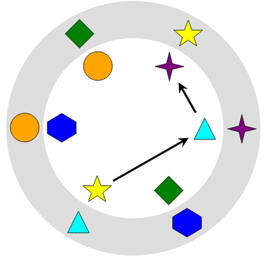
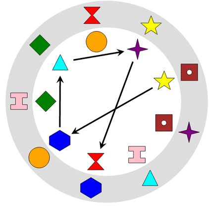
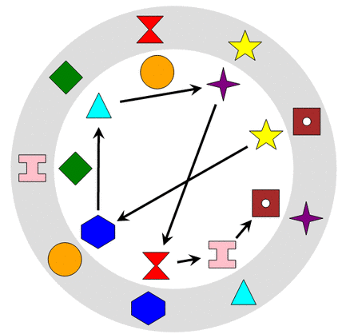
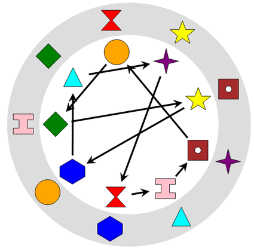

Ratkaisu
Kukin valkean ympyrän kuvio liikkuu suoraan nuolen osoittamaan paikkaan. Haluttu lopputulos saadaan asettamalla kustakin valkoisen ympyrän kuviosta nuoli siihen valkoisen ympyrän kuvioon, jonka kohdalla harmaassa renkaassa on sama kuvio.

Tässä versiossa valkoisen ympyrän kuviot liikkuvat kaksi peräkkäistä nuolten osoittamaa askelta. Valitaan aluksi umpimähkään jokin kuvio (vaikkapa tähti), ja luodaan siitä alkava kahden nuolen polku, joka johtaa harmaan renkaan tähden viereen. Valitsemme ensimmäisen nuolen kohteen satunnaisesti (tässä se johtaa vaikkapa kolmioon):

Ohjataan seuraavaksi edellisen polun toinen kuvio (= kolmio) oikeaan paikkaan jatkamalla edellä luotua polkua nuolella, joka johtaa harmaan renkaan kolmion viereen:

Tässä vaiheessa huomataan, että myös risti on jo tullut ohjatuksi oikeaan paikkaan. Jäljellä on vielä salmiakki, ympyrä ja 6-kulmio. Noudatamme niiden kohdalla samanlaista periaatetta kuin edellä ja saamme seuraavanlaisen ratkaisun:

Tässä versiossa valkoisen ympyrän kuviot liikkuvat kolme peräkkäistä nuolten osoittamaa askelta. Aloitetaan ratkaisun etsiminen merkitsemällä kuvioon kunkin valkoisen ympyrän kuvion oikea siirtokohde. Nämä on esitetty alla vihreillä nuolilla.

Voimme huomata, että lisäämämme nuolet jakoivat kuviot kolmeen erilliseen kolmen nuolen määrittämään silmukkaan: salmiakki-kolmio-I, ympyrä-tiimalasi-6-kulmio ja noppa-tähti-risti. On selvää, että kolmen nuolen kulkeminen 3 kuvion silmukassa vie kuvion takaisin alkuperäiseen paikkaansa, joten mikään kuvio ei päädy kolmen nuolen kulkemisen jälkeen oikeaan kohtaa ellemme lisää kuvioon sellaisia nuolia, jotka kulkevat eri silmukoiden välillä.
Valitaan aluksi vaikkapa tähti, ja luodaan sellainen kolmen nuolen polku, joka käy kahden muun silmukan kautta. Valitsimme alla umpimähkään välietapeiksi 6-kulmion ja kolmion.

Alla on kuvattu tämän polun lisäyksen jälkeinen tilanne.

Tarkastellaan seuraavaksi polun toista kuviota: 6-kulmiota. Sen vienti oikealle paikalle vaatii edellisen polun jatkamista nuolella, joka vie harmaan renkaan 6-kulmion viereen:

Jatkamme polkua saman periaatteen mukaisesti myös polun kolmannen ja neljännen kuvion (kolmio ja risti) kohdalla:

Kun nuolipolkua pidennetään edellisen periaatteen mukaisesti lopuillekin kuvioille (tiimalasi, I, noppa, ympyrä ja salmiakki), saadaan lopputuloksena alla esitetty ratkaisu:

Tämä on tietojenkäsittelyä!
Tehtävä havainnollistaa monessa tietojenkäsittelytieteen ongelmassa tärkeitä permutaatioita. Meillä on annettu joukko alkioita (tässä kuvioita), jotka voidaan muuttaa toiseen järjestykseen (= saman alkiojoukon toinen permutaatio). Permutaatioiden tulee usein noudattaa tiettyjä sääntöjä.
Eräs kuuluisimmista permutaatioihin liittyvistä ongelmista on ns. kauppamatkustajan ongelma, jossa haluttaisiin löytää kokonaispituudeltaan lyhin reitti, joka kulkee kaikkien haluttujen kaupunkien läpi. Kukin kauppamatkustajan ongelman mahdollinen ratkaisu voidaan pohjimmiltaan esittää käytyjen kaupunkien permutaationa (kaupunkien järjestys permutaatiossa ilmaisee, missä järjestyksessä kaupungeissa käydään). Monia arkisiakin ongelmia voidaan kuvata permutaatioiden avulla. Esimerkiksi korttipakan sekoittamisessa on kyse korttien satunnaisen permutaation luomisesta.
Katso lisää esim. https://fi.wikipedia.org/wiki/Permutaatio ja https://fi.wikipedia.org/wiki/Kauppamatkustajan_ongelma.